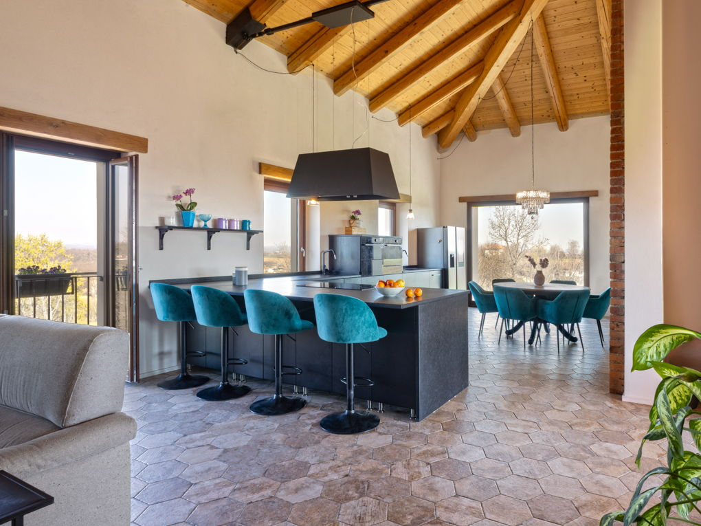

€695.000
Incisa Scapaccino, Piedmont, Italy
Open the listingFully renovated panoramic Monferrato farmhouse that keeps ancient stable-and-hayloft bones while opening to light and views, with a hospitality-ready ground floor and a private 8×4 pool in nearly a hectare of garden — restored-with-pool bargain under €750k.
Opened 10 Sep 2026 via E&V expose __NEXT_DATA__ (EN). salesPrice €695000. 8 bed / 6 bath / ~400 m² / plot 8800. Private pool verified on expose. Shop=Engel & Völkers Asti-Monferrato. Locale Incisa Scapaccino. UUID/ref deduped against board + 09-10 existing files + prior keepers.